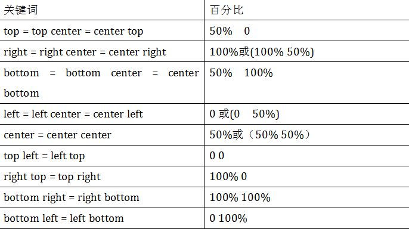
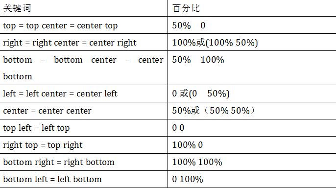

在没有重置transform-origin改变元素原点位置的情况下，CSS变形进行的旋转、位移、缩放，扭曲等操作都是以元素自己中心位置进行变形。但很多时候，我们可以通过transform-origin来对元素进行原点位置改变，使元素原点不在元素的中心位置，以达到需要的原点位置。
transform-origin取值和元素设置背景中的background-position取值类似，如下表所示：

任何一个元素都有一个中心点，默认情况之下，其中心点是居于元素X轴和Y轴的50%处。如下图所示：
在没有重置transform-origin改变元素原点位置的情况下，CSS变形进行的旋转、位移、缩放，扭曲等操作都是以元素自己中心位置进行变形。但很多时候，我们可以通过transform-origin来对元素进行原点位置改变，使元素原点不在元素的中心位置，以达到需要的原点位置。
transform-origin取值和元素设置背景中的background-position取值类似，如下表所示：
